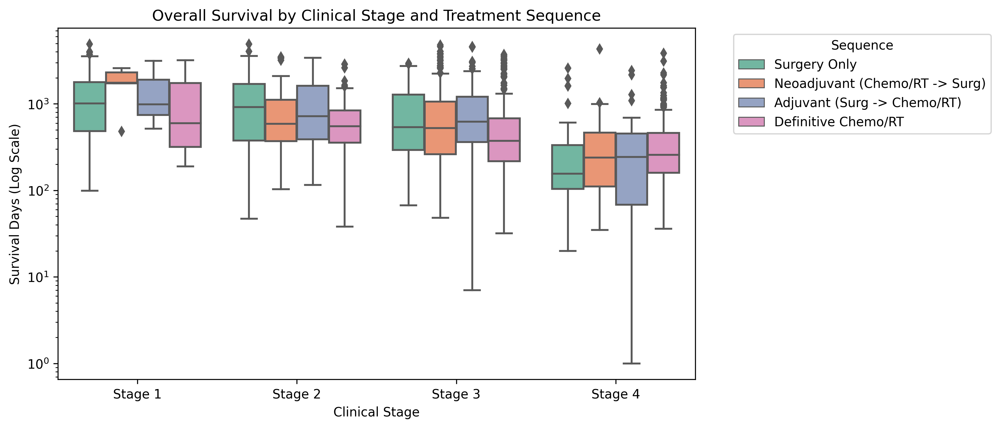
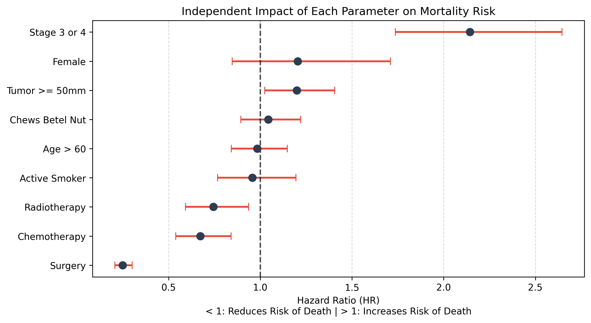
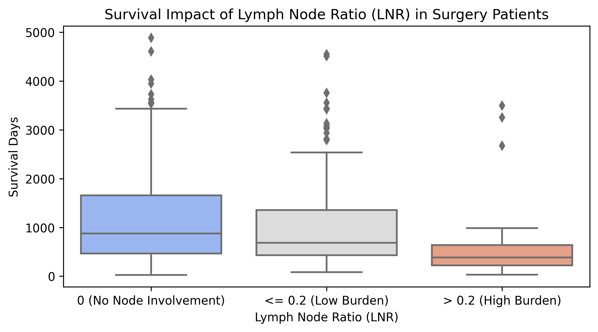

From Unsupervised Phenotyping to Surgical Quality
1. Treatment Modalities & Sequencing Dynamics
The sequence of clinical interventions—Surgery, Chemotherapy, and Radiotherapy—dictates stage-specific outcomes. By analyzing the precise timelines of the patient cohort, we separated the data into distinct treatment pathways: Adjuvant (Surgery first), Neoadjuvant (Chemo/RT first), Definitive Chemo/RT, and Surgery Only.

Key Clinical Insight: Stage 3 Management
For Stage 3 tumors, Adjuvant Therapy (Surgery first, median survival 623 days) statistically outperformed Neoadjuvant Therapy (Chemo/RT first, median survival 527 days). Relying solely on definitive Chemo/RT without surgical intervention resulted in a significant survival drop to 375 days.
2. Independent Parameter Impact (Hazard Ratios)
To eliminate confounding variables (e.g., older patients receiving less aggressive treatments), a Cox Proportional Hazards Model was utilized. This model isolates each parameter to determine its exact, independent impact on the patient's risk of mortality.

The statistical output definitively proves that surgical intervention is the most protective independent action (HR 0.27, representing a 73% reduction in relative risk). Conversely, presenting at an advanced stage (Stage 3/4) is the strongest negative driver, independently increasing mortality risk by 121% (HR 2.21).
The Lifestyle Paradox
While being an active smoker at diagnosis independently increases the risk of mortality by 14% (HR 1.14), age stratification revealed an underlying "accelerated aging" effect. Smoking and Betel Nut usage trigger esophageal cancer nearly 7 years prematurely compared to non-users, artificially skewing their initial physiological resilience.
3. Surgical Quality Indicators
For patients undergoing operative resection, institutional treatment quality was evaluated against modern surgical oncology Key Performance Indicators (KPIs).
Lymph Node Ratio (LNR)
The sheer number of positive lymph nodes is heavily influenced by how many nodes the surgeon removes. The Lymph Node Ratio (LNR) adjusts for operative yield. Maintaining an LNR below 0.2 (Low Burden) resulted in a median survival of 701 days, while an LNR above 0.2 triggered a drop in survival to 384 days.

Pathological Complete Response (pCR) & Margins
Among patients receiving Neoadjuvant therapy, 4.1% achieved a Pathological Complete Response (pCR), which doubled their median survival to 859 days. Furthermore, surgical precision remains paramount: achieving an R0 (Negative Margin) clearance yielded a median survival of 825 days, compared to 691 days for R1/R2 positive margins.
Conclusion
Survival within this registry is optimized through a triad of early detection, optimal sequencing (favoring upfront surgery when operable), and strict adherence to surgical quality metrics (LNR < 0.2, R0 margin). Population-level interventions against smoking and betel nut remain critical to reversing the 7-year accelerated onset of the disease.